The Zines
From August 2024 I’m focussing on scanning the covers and adding them to the spreadsheet - this should take a couple of months.
Thumbnails link to archive pages for each publication. Metadata is pretty basic - many zines have more than one creator but I’ve just entered the main or first couple of listed people for now, and “type” is very broad. This will all be expanded once the first pass is done. They’re sorted by creator and you can filter by type or country. Full search to come later.
1,041 zines of the approx 4-5,000 in the archive have been processed with more added every few days. Last updated 21 Aug 2024.
Filter
» RESET «
Type: Zines | Review Zines | Comics | Anthology Comics | Other
Country: UK | USA | RoW
Anthology comics are zines which contain a number of short unconnected comic stories by different people. An anthology is usually based around a theme, even if that theme is “the best stuff the editor could get hold of”. Stories may be serialised over issues and there will often be a core group of creators anchoring most issues.
An anthology will occasionally signify the moment when a previously emerging group of creators establish themselves as the new status quo, collectively establishing their influence over trends in the medium (while also painting a target for the next emerging group, of course). Notable British anthologies from the 1990s in this collection would include Inkling, Scenes from the Inside, Atomic and Turn.
| 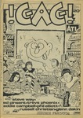 | !GAG! !GAG! |
Type: Anthology Comic Year: 1984 Format: Tabloid Country: UK 🔗 100952 |
| 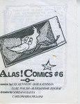 | Alas Comics 6 Aleksandar Zograf |
Type: Anthology Comic Year: 1996 Format: A6 Country: Serbia 🔗 100009 |
| Aut! Aleksandar Zograf |
Type: Anthology Comic Year: 1995 Format: Other Country: Serbia 🔗 100491 |
|
| Commercial Suicide Alex DeCampi & Kieron Gillen |
Type: Anthology Comic Year: 2004 Format: A4 Country: UK 🔗 100883 |
|
| 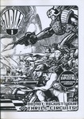 | Zarjaz 1 Andrew Lewis |
Type: Anthology Comic Year: 2001 Format: A4 Country: UK 🔗 100663 |
| 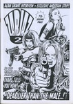 | Zarjaz 2 Andrew Lewis |
Type: Anthology Comic Year: 2002 Format: A4 Country: UK 🔗 100667 |
 |
Dead Hand 5 Andy Fiddy |
Type: Anthology Comic Year: Format: A4 Country: UK 🔗 100568 |
| 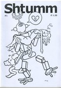 | Shtumm 1 Andy Konky Kru |
Type: Anthology Comic Year: 2002 Format: A5 Country: UK 🔗 100339 |
| 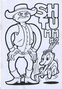 | Shtumm 2 Andy Konky Kru |
Type: Anthology Comic Year: 2002 Format: A5 Country: UK 🔗 100390 |
| 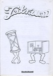 | Zeitraum 1 Andy Konky Kru |
Type: Anthology Comic Year: 1998 Format: A4 Country: UK 🔗 100660 |
| 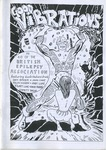 | Good Vibrations Andy Luke |
Type: Anthology Comic Year: 1997 Format: A5 Country: UK 🔗 100357 |
| 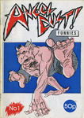 | Angel Dust Funnies 1 Andy Nixon |
Type: Anthology Comic Year: 1989 Format: A5 Country: UK 🔗 100107 |
| 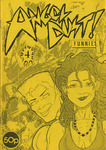 | Angel Dust Funnies 4 Andy Nixon |
Type: Anthology Comic Year: 1989 Format: A5 Country: UK 🔗 100101 |
| 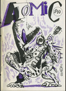 | Atomic 9 Atomic |
Type: Anthology Comic Year: 1990 Format: A5 Country: UK 🔗 100018 |
| 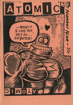 | Atomic 10 Atomic |
Type: Anthology Comic Year: 1990 Format: A5 Country: UK 🔗 100176 |
 |
Atomic 11 Atomic |
Type: Anthology Comic Year: 1991 Format: A5 Country: UK 🔗 100323 |
| 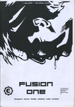 | Fusion 1 Barry Renshaw |
Type: Anthology Comic Year: 2002 Format: A4 Country: UK 🔗 100770 |
| 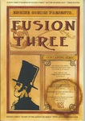 | Fusion 3 Barry Renshaw |
Type: Anthology Comic Year: Format: A4 Country: UK 🔗 100779 |
| 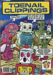 | Toenail Clippings 3 Brendan Byrne |
Type: Anthology Comic Year: 2001 Format: A4 Country: Ireland 🔗 101015 |
| 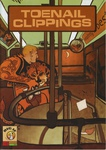 | Toenail Clippings Brendan Byrne |
Type: Anthology Comic Year: 2002 Format: A4 Country: Ireland 🔗 100909 |
| 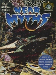 | Near Myths 5 Bryan Talbot |
Type: Anthology Comic Year: 1980 Format: A4 Country: UK 🔗 101006 |
| 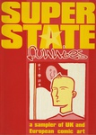 | Superstate Funnies Caption |
Type: Anthology Comic Year: 1997 Format: A4 Country: UK 🔗 100619 |
| 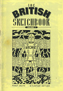 | The British Sketchbook 1 Darryl Cunningham |
Type: Anthology Comic Year: 1997 Format: A5 Country: UK 🔗 100132 |
| 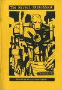 | The Marvel Sketchbook Darryl Cunningham |
Type: Anthology Comic Year: 1994 Format: A5 Country: UK 🔗 100071 |
| Alchemist 1 David Hobden |
Type: Anthology Comic Year: 1997 Format: A4 Country: UK 🔗 100984 |
|
| Alchemist 2 David Hobden |
Type: Anthology Comic Year: 1997 Format: A4 Country: UK 🔗 100982 |
|
| Alchemist 2 David Hobden |
Type: Anthology Comic Year: 1997 Format: A4 Country: UK 🔗 100985 |
|
| 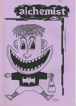 | Alchemist 4 David Hobden |
Type: Anthology Comic Year: 1998 Format: A4 Country: UK 🔗 100988 |
| 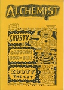 | Alchemist 6 David Hobden |
Type: Anthology Comic Year: 1998 Format: A4 Country: UK 🔗 100991 |
| Alchemist 7 David Hobden |
Type: Anthology Comic Year: 1998 Format: A4 Country: UK 🔗 101007 |
|
| Alchemist 8 David Hobden |
Type: Anthology Comic Year: 1998 Format: A4 Country: UK 🔗 100989 |
|
| 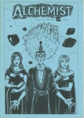 | Alchemist 9 David Hobden |
Type: Anthology Comic Year: 1999 Format: A4 Country: UK 🔗 100981 |
| 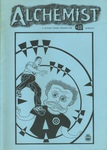 | Alchemist 10 David Hobden |
Type: Anthology Comic Year: 1999 Format: A4 Country: UK 🔗 100983 |
| Alchemist 11 David Hobden |
Type: Anthology Comic Year: 1999 Format: A4 Country: UK 🔗 100990 |
|
| 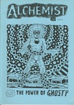 | Alchemist 12 David Hobden |
Type: Anthology Comic Year: 1998 Format: A4 Country: UK 🔗 100987 |
| Alchemist 13 David Hobden |
Type: Anthology Comic Year: 1999 Format: A4 Country: UK 🔗 100986 |
|
| 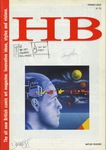 | HB 1 David Jerome |
Type: Anthology Comic Year: 1988 Format: A4 Country: UK 🔗 100590 |
| 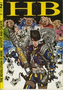 | HB 2 David Jerome |
Type: Anthology Comic Year: 1988 Format: A4 Country: UK 🔗 100589 |
| 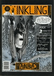 | Inkling 3 David Potts |
Type: Anthology Comic Year: 1989 Format: A4 Country: UK 🔗 100942 |
| 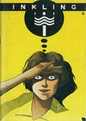 | Inkling 4 David Potts |
Type: Anthology Comic Year: 1989 Format: A5 Country: UK 🔗 100868 |
| 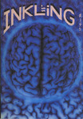 | Inkling 9 David Potts |
Type: Anthology Comic Year: 1992 Format: A5 Country: UK 🔗 100177 |
| 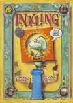 | Inkling 12 David Potts |
Type: Anthology Comic Year: 1994 Format: A4 Country: UK 🔗 100941 |
| 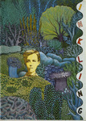 | Inkling Fish David Potts |
Type: Anthology Comic Year: 1991 Format: A5 Country: UK 🔗 100152 |
| 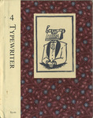 | Typewriter 4 David Youngblood |
Type: Anthology Comic Year: 2001 Format: A5 Country: USA 🔗 100014 |
| Ground Zero 1 Derek Mantle |
Type: Anthology Comic Year: 1989 Format: A4 Country: UK 🔗 100556 |
|
| Ground Zero 2 Derek Mantle |
Type: Anthology Comic Year: 1990 Format: A4 Country: UK 🔗 100911 |
|
| 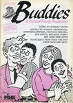 | Buddies 1 Don Melia |
Type: Anthology Comic Year: 1992 Format: A4 Country: UK 🔗 100793 |
| 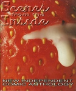 | Scenes from the Inside 2 Drat 'n' Blast Books |
Type: Anthology Comic Year: 1993 Format: A4 Country: UK 🔗 100930 |
 |
Scenes from the Inside 3 Drat 'n' Blast Books |
Type: Anthology Comic Year: 1994 Format: A4 Country: UK 🔗 101028 |
| 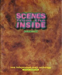 | Scenes from the Inside 4 Drat 'n' Blast Books |
Type: Anthology Comic Year: 1994 Format: A4 Country: UK 🔗 100964 |
| 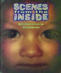 | Scenes from the Inside 5 Drat 'n' Blast Books |
Type: Anthology Comic Year: 1995 Format: A4 Country: UK 🔗 100931 |
| Scenes from the Inside 6 Drat 'n' Blast Books |
Type: Anthology Comic Year: 1995 Format: A4 Country: UK 🔗 100965 |
|
| 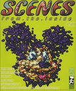 | Scenes from the Inside 7 Drat 'n' Blast Books |
Type: Anthology Comic Year: 1996 Format: A4 Country: UK 🔗 100750 |
| 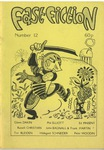 | Fast Fiction 12 Ed Pinsent |
Type: Anthology Comic Year: 1984 Format: A5 Country: UK 🔗 100314 |
| 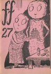 | Fast Fiction 27 Ed Pinsent |
Type: Anthology Comic Year: 1989 Format: A5 Country: UK 🔗 100289 |
| 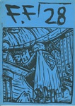 | Fast Fiction 28 Ed Pinsent |
Type: Anthology Comic Year: Format: A4 Country: UK 🔗 100787 |
| The Seven Faced Badger of Doom Factor Fiction Press |
Type: Anthology Comic Year: Format: A5 Country: UK 🔗 100086 |
|
| 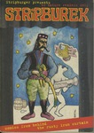 | Stripburek Forum Ljubljana |
Type: Anthology Comic Year: 1997 Format: A4 Country: Slovenia 🔗 100689 |
| 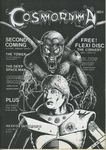 | Cosmorama 1 Garen Ewing |
Type: Anthology Comic Year: 1988 Format: A4 Country: UK 🔗 100534 |
| 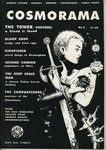 | Cosmorama 2 Garen Ewing |
Type: Anthology Comic Year: Format: A4 Country: UK 🔗 100680 |
| 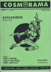 | Cosmorama 3 Garen Ewing |
Type: Anthology Comic Year: 1991 Format: A4 Country: UK 🔗 100533 |
| Pervert Minicomics 8 Gavin McInnes |
Type: Anthology Comic Year: 1995 Format: A5 Country: Canada 🔗 100749 |
|
| 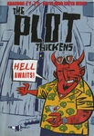 | The Plot Thickens 1 Gaving Burrows |
Type: Anthology Comic Year: 1999 Format: A5 Country: UK 🔗 100858 |
| 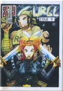 | Surge 9 Ger Evans |
Type: Anthology Comic Year: 1998 Format: A5 Country: Ireland 🔗 100312 |
| 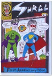 | Surge 10 Ger Evans |
Type: Anthology Comic Year: 1998 Format: A5 Country: Ireland 🔗 100311 |
| 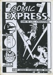 | Comic Express 5 Goodman Bros |
Type: Anthology Comic Year: 2000 Format: A4 Country: UK 🔗 100552 |
| 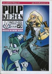 | Pulp Kitchen 3 Goodman Bros |
Type: Anthology Comic Year: Format: A4 Country: UK 🔗 101009 |
| Pulp Kitchen 4 Goodman Bros |
Type: Anthology Comic Year: 2000 Format: A4 Country: UK 🔗 100715 |
|
| Pulp Kitchen 5 Goodman Bros |
Type: Anthology Comic Year: 2001 Format: A4 Country: UK 🔗 100661 |
|
| Zip Gun Presents - Chimera Goodman Bros |
Type: Anthology Comic Year: 2003 Format: A5 Country: UK 🔗 100069 |
|
| Zip Gun Presents - Japan Goodman Bros |
Type: Anthology Comic Year: 2001 Format: A5 Country: UK 🔗 100129 |
|
 |
Zip Gun Presents - Noir Goodman Bros |
Type: Anthology Comic Year: 2002 Format: A5 Country: UK 🔗 100316 |
| The Journal of Silly 10 Ham & Knife |
Type: Anthology Comic Year: 1997 Format: A5 Country: UK 🔗 100270 |
|
| The Journal of Silly 12b Ham & Knife |
Type: Anthology Comic Year: Format: A5 Country: UK 🔗 100427 |
|
| Stripburger 9 Jakob Kelmenčič |
Type: Anthology Comic Year: 1992 Format: A4 Country: UK 🔗 100604 |
|
| Weird City 4 James Boswell |
Type: Anthology Comic Year: 1993 Format: A4 Country: UK 🔗 100546 |
|
| Weird City 5 James Boswell |
Type: Anthology Comic Year: 1993 Format: A4 Country: UK 🔗 100547 |
|
| Weird City 6 James Boswell |
Type: Anthology Comic Year: 1994 Format: A4 Country: UK 🔗 100536 |
|
| Topaz 8 Jason Lyne |
Type: Anthology Comic Year: 1997 Format: A4 Country: UK 🔗 100936 |
|
| Topaz 17 Jason Lyne |
Type: Anthology Comic Year: 2000 Format: A4 Country: UK 🔗 100510 |
|
| Awe Jim Cameron |
Type: Anthology Comic Year: 1993 Format: A4 Country: UK 🔗 101024 |
|
| Square Eyed Stories 3 Jim McGee |
Type: Anthology Comic Year: 1988 Format: A4 Country: UK 🔗 100557 |
|
| Square Eyed Stories 4 Jim McGee |
Type: Anthology Comic Year: 1988 Format: A4 Country: UK 🔗 100559 |
|
| Square Eyed Stories 11 Jim Mcgee |
Type: Anthology Comic Year: 1999 Format: A5 Country: UK 🔗 100425 |
|
| Square Eyed Stories 13 Jim Mcgee |
Type: Anthology Comic Year: 2001 Format: A5 Country: UK 🔗 100426 |
|
 |
Square Eyed Stories 15 Jim Mcgee |
Type: Anthology Comic Year: 2002 Format: A5 Country: UK 🔗 100330 |
| Square Eyed Stories 16 Jim Mcgee |
Type: Anthology Comic Year: 2003 Format: A5 Country: UK 🔗 100090 |
|
| Square Eyed Stories 17 Jim Mcgee |
Type: Anthology Comic Year: 2004 Format: A5 Country: UK 🔗 100093 |
|
 |
Bedlam 1 John Gallagher |
Type: Anthology Comic Year: 1999 Format: A4 Country: UK 🔗 100935 |
| Asbestos 1 Jone-Zee |
Type: Anthology Comic Year: 1995 Format: A4 Country: UK 🔗 100606 |
|
| Asbestos 2 Jone-Zee |
Type: Anthology Comic Year: 1995 Format: A4 Country: UK 🔗 100596 |
|
| Sunburn 1 Karl Thomsen |
Type: Anthology Comic Year: 1996 Format: A4 Country: Canada 🔗 100928 |
|
| Sunburn 7 Karl Thomsen |
Type: Anthology Comic Year: 1998 Format: A4 Country: Canada 🔗 100731 |
|
| Sunburn 11 Karl Thomsen |
Type: Anthology Comic Year: 1999 Format: A4 Country: Canada 🔗 100745 |
|
| Impossible 1 Kevin Huizenga |
Type: Anthology Comic Year: 2001 Format: A5 Country: USA 🔗 100144 |
|
| Indie Forum 5 Leonie O'Moore |
Type: Anthology Comic Year: 1997 Format: A4 Country: UK 🔗 100944 |
|
| Thank God It's Ugly 4 Marcel Ruÿters |
Type: Anthology Comic Year: 1996 Format: A4 Country: Netherlands 🔗 100610 |
|
| Vacuum 6 Maria Björklund & Petri Bergman |
Type: Anthology Comic Year: 1995 Format: A4 Country: Finland 🔗 100921 |
|
| Extremes 1 Martyn Jones |
Type: Anthology Comic Year: 1993 Format: A4 Country: UK 🔗 100767 |
|
| Extremes 2 Martyn Jones |
Type: Anthology Comic Year: 1993 Format: A4 Country: UK 🔗 100768 |
|
| Destronic News 2 Michael Perridge |
Type: Anthology Comic Year: 1992 Format: A5 Country: UK 🔗 100212 |
|
| Violent 4 Mike Sivier |
Type: Anthology Comic Year: 2001 Format: A4 Country: UK 🔗 100920 |
|
| Violent 5 Mike Sivier |
Type: Anthology Comic Year: 2002 Format: A4 Country: UK 🔗 100712 |
|
| Naparthied Naparthied |
Type: Anthology Comic Year: Format: A4 Country: Spain 🔗 100792 |
|
| Nighfall 4 Noel K Hannan |
Type: Anthology Comic Year: 1991 Format: A4 Country: UK 🔗 100889 |
|
| Nightfall 2 Noel K Hannan |
Type: Anthology Comic Year: 1990 Format: A5 Country: UK 🔗 100430 |
|
| Nightfall 3 Noel K Hannan |
Type: Anthology Comic Year: 1991 Format: A4 Country: UK 🔗 100695 |
|
| Nightfall 5 Noel K Hannan |
Type: Anthology Comic Year: 1992 Format: A4 Country: UK 🔗 100593 |
|
| Paranoid 3 Paranoid Comics |
Type: Anthology Comic Year: 1990 Format: A4 Country: Canada 🔗 100740 |
|
| Escape 8 Paul Gravett |
Type: Anthology Comic Year: 1986 Format: A4 Country: UK 🔗 101048 |
|
| Escape 9 Paul Gravett |
Type: Anthology Comic Year: 1986 Format: A4 Country: UK 🔗 100727 |
|
| Escape 10 Paul Gravett |
Type: Anthology Comic Year: 1987 Format: A4 Country: UK 🔗 100726 |
|
| Escape 12 Paul Gravett |
Type: Anthology Comic Year: 1987 Format: A4 Country: UK 🔗 100728 |
|
| Escape 17 Paul Gravett |
Type: Anthology Comic Year: 1989 Format: A4 Country: UK 🔗 100729 |
|
 |
PDS 0 Pete Ashton |
Type: Anthology Comic Year: 1990 Format: A4 Country: UK 🔗 100616 |
| PDS 2 Pete Ashton |
Type: Anthology Comic Year: 1991 Format: A4 Country: UK 🔗 100669 |
|
| PDS 3 Pete Ashton |
Type: Anthology Comic Year: 1991 Format: A4 Country: UK 🔗 100670 |
|
| PDS 4 Pete Ashton |
Type: Anthology Comic Year: 1991 Format: A4 Country: UK 🔗 100617 |
|
| Equinox 1 Peter M Jaques |
Type: Anthology Comic Year: 1995 Format: A4 Country: UK 🔗 100783 |
|
| Pavement 2+3 Peter Pavement |
Type: Anthology Comic Year: 1992 Format: A5 Country: UK 🔗 100218 |
|
| POT 3 POT |
Type: Anthology Comic Year: 2001 Format: A4 Country: Czechia 🔗 100765 |
|
| Turn 1 Reuben Willmott |
Type: Anthology Comic Year: 1994 Format: A4 Country: UK 🔗 100512 |
|
| Turn 2 Reuben Willmott |
Type: Anthology Comic Year: 1995 Format: A4 Country: UK 🔗 100511 |
|
| Turn 3 Reuben Willmott |
Type: Anthology Comic Year: 1995 Format: A4 Country: UK 🔗 100894 |
|
| Turn 4 Reuben Willmott |
Type: Anthology Comic Year: 1995 Format: A4 Country: UK 🔗 100483 |
|
| Turn 5 Reuben Willmott |
Type: Anthology Comic Year: 1996 Format: A4 Country: UK 🔗 100481 |
|
| The Bedsit Journal 1 Richard Cowdry |
Type: Anthology Comic Year: 2004 Format: A4 Country: UK 🔗 100493 |
|
| The Bedsit Journal 2 Richard Cowdry |
Type: Anthology Comic Year: 2007 Format: A4 Country: UK 🔗 100701 |
|
| Skin Richard Woods & Bill Naylor |
Type: Anthology Comic Year: 1995 Format: A4 Country: UK 🔗 101017 |
|
| Automatic 6 Richard Z Starbuck |
Type: Anthology Comic Year: 1996 Format: A5 Country: UK 🔗 100151 |
|
| Chain Mesh 4 Richard Z Starbuck |
Type: Anthology Comic Year: 1992 Format: A5 Country: UK 🔗 100431 |
|
| Near Myths 1 Rob King |
Type: Anthology Comic Year: 1978 Format: A4 Country: UK 🔗 100885 |
|
| Near Myths 2 Rob King |
Type: Anthology Comic Year: 1978 Format: A4 Country: UK 🔗 100949 |
|
| Near Myths 3 Rob King |
Type: Anthology Comic Year: 1978 Format: A4 Country: UK 🔗 100973 |
|
| Near Myths 4 Rob King |
Type: Anthology Comic Year: 1979 Format: A4 Country: UK 🔗 100974 |
|
| Minds Eye Presents 10 Robin Bougie |
Type: Anthology Comic Year: 2001 Format: A5 Country: USA 🔗 100003 |
|
| Paper Tiger Comix 1 Sean Duffield |
Type: Anthology Comic Year: 2004 Format: A5 Country: UK 🔗 100099 |
|
| Paper Tiger Comix 2 Sean Duffield |
Type: Anthology Comic Year: 2005 Format: A5 Country: UK 🔗 100326 |
|
| Paper Tiger Comix 4 Sean Duffield |
Type: Anthology Comic Year: 2007 Format: A5 Country: UK 🔗 100873 |
|
| Garlic Sean Duncan |
Type: Anthology Comic Year: 2002 Format: A5 Country: USA 🔗 100878 |
|
| The Girly Comic 1 Selina Locke |
Type: Anthology Comic Year: 2002 Format: A5 Country: UK 🔗 100343 |
|
| Ten Foot Rule 5 Shawn Granton |
Type: Anthology Comic Year: 2000 Format: A5 Country: USA 🔗 100006 |
|
| Anarchy in the UK... the Comic! Slab-o-Concrete |
Type: Anthology Comic Year: 1994 Format: A5 Country: UK 🔗 100211 |
|
| LCC Presents: The Joy of S*x Steve Marchant |
Type: Anthology Comic Year: 1993 Format: A4 Country: UK 🔗 100662 |
|
| Sofa 1 Sussex Small Press Artists Militia |
Type: Anthology Comic Year: 1993 Format: A4 Country: UK 🔗 100697 |
|
| Sofa 2 Sussex Small Press Artists Militia |
Type: Anthology Comic Year: 1994 Format: A4 Country: UK 🔗 100698 |
|
| Sturgeon White Moss 1 Sylvia Farago |
Type: Anthology Comic Year: 2002 Format: A4 Country: UK 🔗 101030 |
|
| Sturgeon White Moss 2 Sylvia Farago |
Type: Anthology Comic Year: 2003 Format: A4 Country: UK 🔗 101031 |
|
| Sturgeon White Moss 3 Sylvia Farago |
Type: Anthology Comic Year: 2003 Format: A4 Country: UK 🔗 101032 |
|
| There Goes Tokyo... Presents 2 There Goes Tokyo |
Type: Anthology Comic Year: 2001 Format: A4 Country: UK 🔗 100677 |
|
| There Goes Tokyo... Spotlight On... 1 There Goes Tokyo |
Type: Anthology Comic Year: 2001 Format: A4 Country: UK 🔗 100537 |
|
 |
There Goes Tokyo... Spotlight On... 2 There Goes Tokyo |
Type: Anthology Comic Year: 2001 Format: A4 Country: UK 🔗 101016 |
| Dead Fly Pie 1 Walrus Press |
Type: Anthology Comic Year: 1994 Format: A4 Country: UK 🔗 100570 |
|
| Whores of Mensa 1 Whores of Mensa |
Type: Anthology Comic Year: 2004 Format: A4 Country: UK 🔗 100908 |
|
| Whores of Mensa 2 Whores of Mensa |
Type: Anthology Comic Year: 2005 Format: A4 Country: UK 🔗 100915 |
|
| Whores of Mensa 3 Whores of Mensa |
Type: Anthology Comic Year: 2007 Format: A4 Country: UK 🔗 101003 |
|
| Whores of Mensa 4 Whores of Mensa |
Type: Anthology Comic Year: 2009 Format: A4 Country: UK 🔗 100620 |
|
| Whores of Mensa 5 Whores of Mensa |
Type: Anthology Comic Year: Format: A4 Country: UK 🔗 100614 |
|
| Heartbreak Hotel 1 Willyprods |
Type: Anthology Comic Year: 1997 Format: A4 Country: UK 🔗 100796 |
|
| Heartbreak Hotel 2 Willyprods |
Type: Anthology Comic Year: 1998 Format: A4 Country: UK 🔗 100795 |
|
| World War 3 Illustrated 14 World War 3 Illustrated |
Type: Anthology Comic Year: 1991 Format: A4 Country: USA 🔗 100893 |
ends.